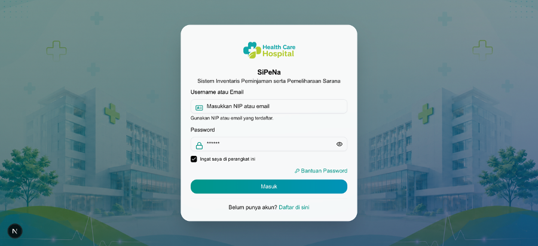
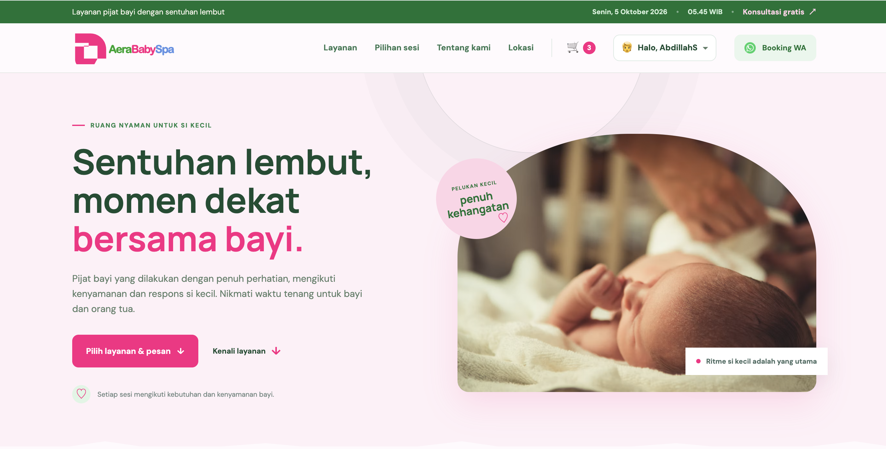
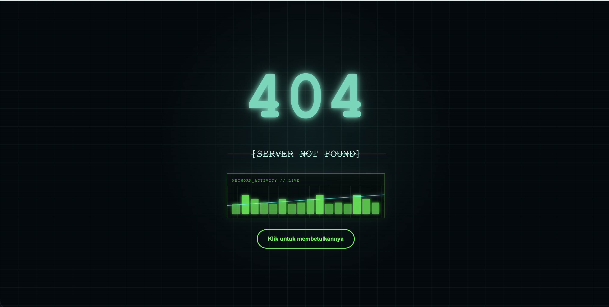
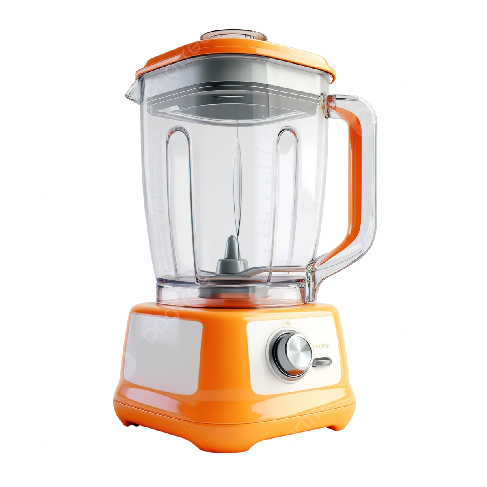

Galeri
Karya & Proyek

Desain Publikasi Digital
Desain grafis · Proyek personal

Eksplorasi Komposisi Visual
Visual design · Proyek personal

Materi Branding Visual
Branding · Proyek personal
Ilustrasi & Olah Gambar
Multimedia · Proyek personal

Konsep Poster Kreatif
Poster · Proyek personal
Eksperimen Tipografi
Tipografi · Proyek personal
Cara Saya Bekerja
Bidang yang Dikerjakan
Desain Grafis
Materi publikasi, poster, dan konten visual internal menggunakan Adobe Photoshop dan Illustrator.
Dokumentasi & Data
Penyusunan laporan, rekap data, dan template dokumen kerja yang rapi serta mudah ditelusuri.